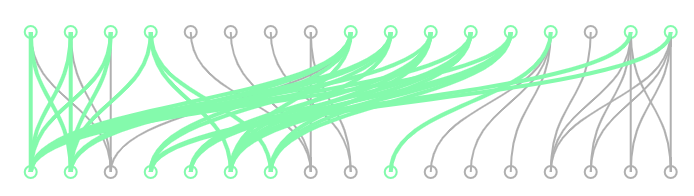
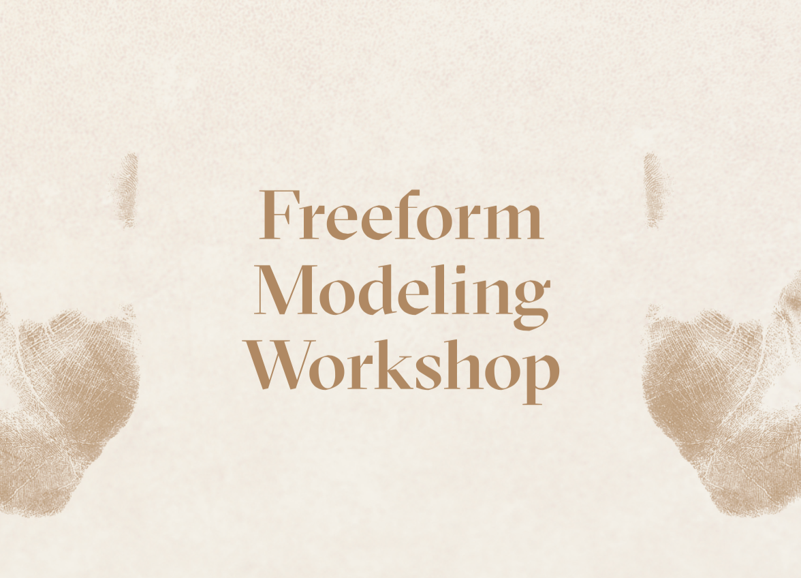
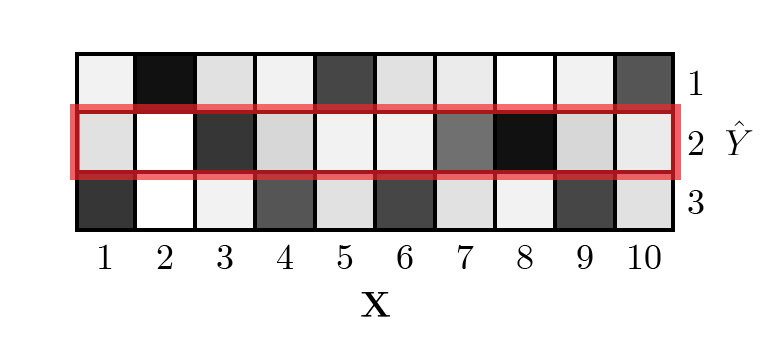
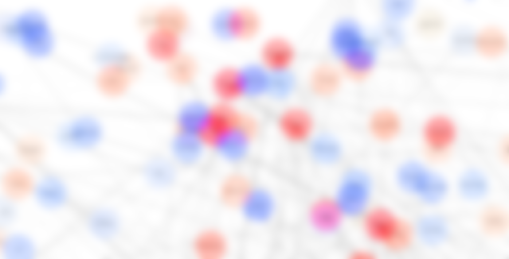

Adaptive UIs
HfG Schwäbisch Gmünd, 2019

Hybrid Microgenetic Analysis
Creativity & Cognition 2019
Freeform Modeling Workshop
HfG Schwäbisch Gmünd, 2019


Logistic Regression & Information Theory
UC Berkeley, 2018

PageRank on Billboard & Spotify Data
UC Berkeley, 2018
Momento
UC Berkeley, 2017